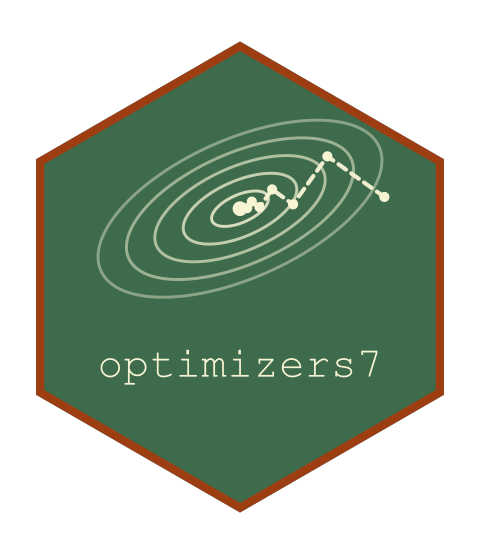

The Settings of a Descent Method for the Compiled Loop
Source:R/methods.R
descent_settings.Rddescent_settings() returns the arguments that a descent method passes to
the compiled loop for a problem with npar parameters, without running it,
for another package that runs the loop through the headers in
inst/include/optimizers7 (descent_loop() in descent_loop.h).
Format
descent_capture: an environment whose flag on makes
run_descent() return its settings instead of running.
Arguments
- optimizer
An
optimizer().- npar
The number of parameters.
Details
The settings are produced by the method's own minimize() method, which
stops before the run, so they are the ones a call of minimize() with the
same optimizer would use: the description of the direction (method), the
line search as line_search_spec() describes it (line_search), maxit,
max_eval (.Machine$integer.max for an unlimited budget), verbose,
refresh, keep_trace, step, and the stopping rule as
criterion_spec() describes it (rule_spec, NULL where the rule has no
compiled form). The result is NULL for an optimizer whose method does not
run the descent loop, and for chebyshev(), whose direction reads a third
derivative supplied as an R function.
Examples
str(descent_settings(lbfgs(), 2)$method)
#> List of 4
#> $ type : chr "lbfgs"
#> $ memory : int 10
#> $ curvature_tol : num 1e-10
#> $ stop_decrement: num 0.001
descent_settings(nelder_mead(), 2)
#> NULL